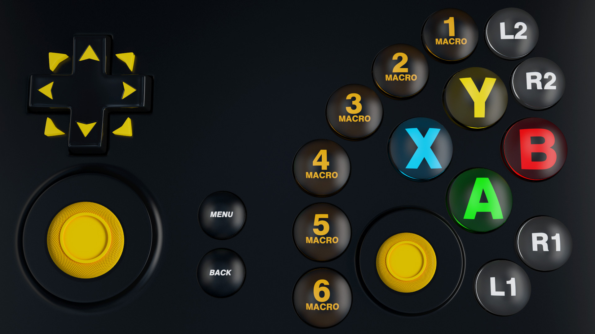
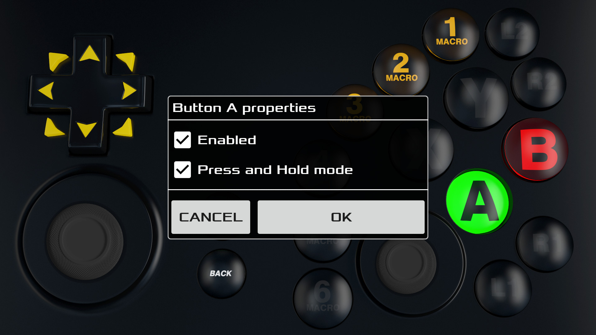
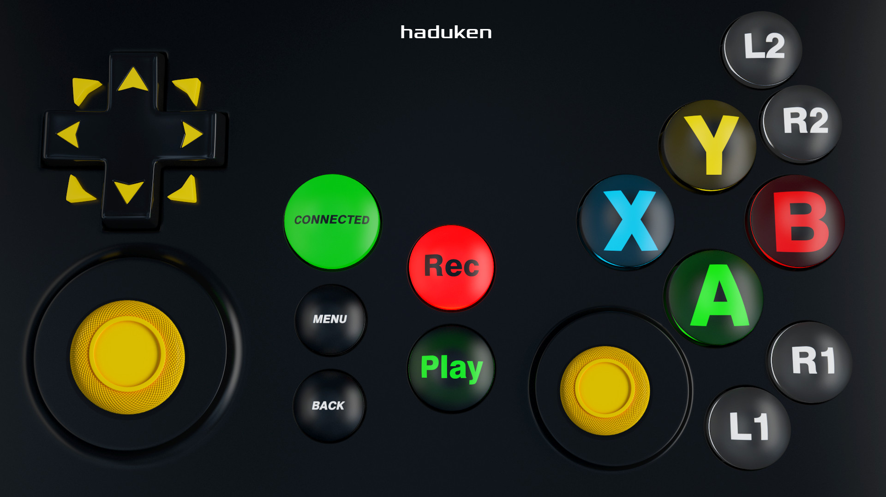
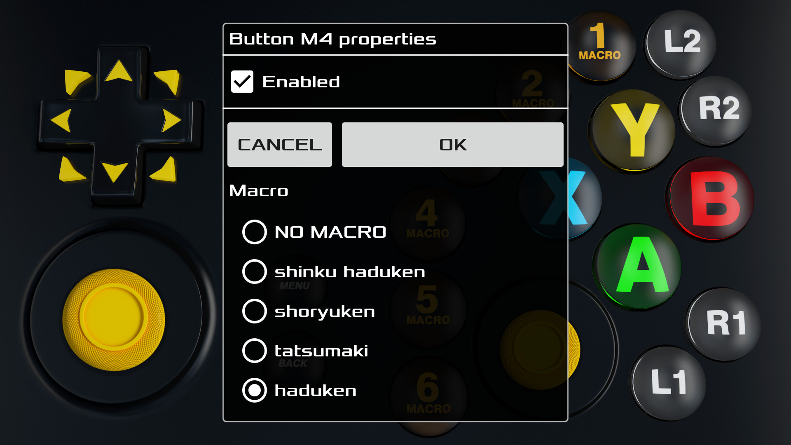
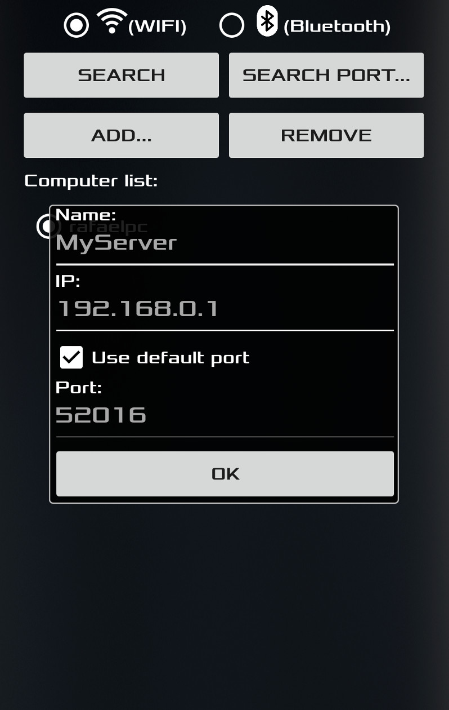

Demonstration
Features
- Software server and driver optimized to achieve best communication performance between Android App and PC which allows a real gamepad emulation.
- MaxJoypad driver allows the App to be recognized as a real gamepad for Windows.
- 3D button skin interface that mimics a real gamepad look and fill.
- Wifi and Bluetooth communication support.
- Multiplayer support up to 4 players.
- Setup of specific network parameters such as the IP address and ports although MaxJoypad App is able to scan and to do network setup automatically on Wifi mode.
- The Macro feature turns gameplay experience easier and uncomplicated for beginner and pro players. It allows to record special movements and gameplay actions and associate that with Macro buttons.
- Gamepad profile management feature which enables players to disable undesired buttons or configure its behavior like the press and hold mode.
- Xbox 360 controller emulation through x360ce.
- It does not require administrative privileges for running server software on Windows.
- Installation package and driver signed digitally for safety.
- Quick server and driver installation.

Generic 3D buttons interface that mimics a real PC gamepad

Create custom Gamepad profiles like this Jump and Run profile.

Create special movements or automatic game actions (Macros)

Configure MACRO buttons according your needs

Connect MAXjoypad app via Wifi or Bluetooth network
Download
Download: MAXJoypadServerPack-1.2.5.exe
(For Windows 7, 8, 8.1 and 10 - 32/64 bits)
MAXJoypad server and driver installation are quick. Just download the package above and execute it. During MAXJoypad installation Windows firewall is setup automatically to enable server and App communication. In case you do not see server interface running on Windows take a look at MAXJoypad icon on the Windows system tray. Click with right button on it and select "Settings..." in order to show up server connection setup interface.
If Windows is blocking your download try the following:
ZIP file: MAXJoypadServerPack-1.2.5.zip.
Videos/Tutorials
MAXJoypad Windows package installation.
Ultra Street Fighter IV with macro goodies.
MAXJoypad with Xbox 360 controller mode on Castlevania 2.
Contact/Support
- Copy x360ce.ini and xinput1_3.dll files from
C:\Program Files(x86)\MaxJoypad\MaxJoypad\x360\
folder to the game installation directory and restart the game.
For Steam games usually destination directory is:
C:\SteamLibrary\steamapps\common\(GAME)\
or find the Steam games installation folder for your computer at Steam software settings. - Check if both your Android device and Computer/Notebook are online and connected to the same Wifi network.
- Close MAXJoypad server and execute it again and make sure that Gamepad Service Status is "Running..." on the Server Interface.
- Check if your connection configuration both on Server and App are the same (Wifi, ports or Bluetooth configuration).
- Case your Windows 7 be with automatic updates disabled or either outdated, it will be required to install at least one Windows update in order to MAXJoypad property driver loading. Check out if your system is 32 or 64 bits and download the Windows update right from Microsoft site.
- Check if MAXJoypad driver is working. Use the "Check Gamepad Driver..." button in server interface. Case there is a message error about the driver uninstall MaxJoypad package using the Windows Uninstall Programs option and install MaxJoypadServer.msi again.
- Case your Windows 8.1 or 10 be with Windows Defender activated and at the end of MAXJoypad download the browser shows a message saying that the file could harm your computer. Ignore it and access the MAXJoypad package at the download folder. Remember MAXJoypad holds digital signature on your installation package and driver for safety.
- Case your Windows 8.1 or 10 be with Windows Defender activated, update its Virus and Spyware definitions. Go to the Windows Defender Update and press the Update button then install the MAXJoypad package again.
- MAXJoypad was tested with mostly free Antivirus and it does work. It might not be the case only for specific Windows firewall and Antivirus configurations then let us and your Antivirus provider to know.
1 - MAXJoypad configuration for Xbox 360 gamepad mode
2 - Connection issues with MAXJoypad Android app and MAXJoypad server
3 - Error messages about the Gamepad Driver
4 - Problems related with Antivirus and Windows Defender